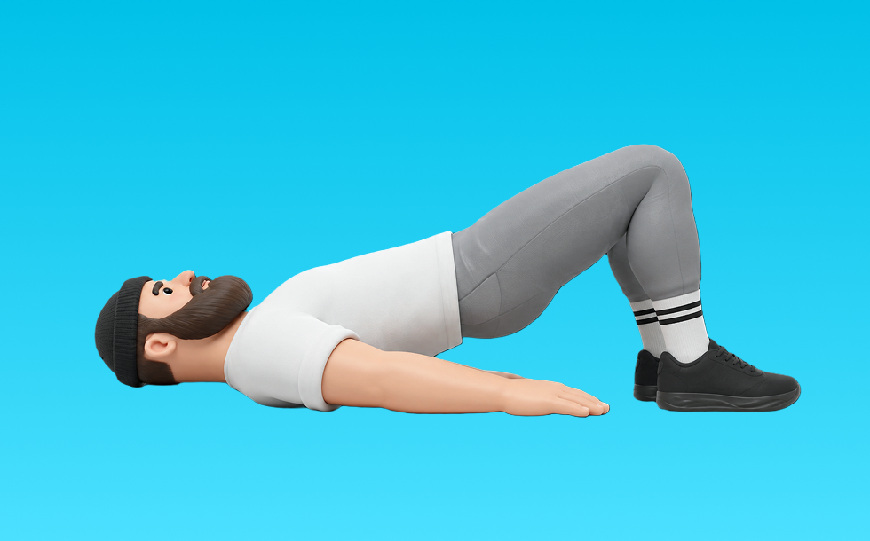

グルートブリッジ

グルートブリッジとは、自重を使って「股関節を伸ばす」動作でお尻（臀筋）、太もも裏（ハムストリング）を鍛える種目です。器具なしで手軽にでき、フォーム次第で負荷調整しやすいのが特徴で、骨盤を持ち上げて臀部を締め、ゆっくり戻す動作を繰り返します。下半身の筋力・筋量アップが期待できます。
- 対象部位
- 脚
- 器具
- 自重
- 記録形式
- 回数
- 別名
- グルブリ
YouTube動画
YouTubeショート
-
【グルート・ブリッジの正しいやり方】グイっとカラダを持ち上げて尻を鍛える｜Training Movie 100｜Tarzan
-
【グルート・ブリッジの正しいやり方】お尻を引き締め、キュッとヒップアップ！｜Training Movie 100｜Tarzan Web
-
How To Do Glute Bridge | Correct Form
-
その尻トレ意味ないかも？美尻プロが教えるグルーツブリッジ【岡部友の宅トレ】
-
グルートブリッジで腰がつらい人へ。上げすぎないのがコツ｜3SC8 #ジム初心者 #motivation #パーソナルトレーニング #gymandswim #ジム初心者 #パーソナルトレーニング #水泳
-
【ヒップアップ効果】ヒップスラストは脚の位置と身体の姿勢で効く部位が違います。ワークアウトが無駄にならないようにポイントを押さえましょう💥#shorts #筋トレ #ダイエット #健康
-
運動不足解消！自宅でできる片足グルートブリッジ
-
グルートブリッジ
-
ダンベル・グルートブリッジ【紹介編】
-
How to EASILY Set Up Dumbbell Glute Bridges (Gym Hack)
-
Banded Glute Bridge
-
【両店共通】グルート 使い方動画
-
[SYNERGY. Fitness Studio] ブーティビルダーヒップスラストのやり方 #筋トレ #エクササイズ #尻トレ
-
【筋肉つかない】自重トレ3種目 #自重トレーニング #筋トレ #フィットネス
-
#下半身ダイエット #宅トレ女子 #桃尻トレーニング #美尻トレーニング #ヒップアップ
-
スクワットVSヒップスラストお尻の筋肥大に効果的なのはどちら？ #フィットネス #筋トレ
-
お尻に効かない人集合！ヒップリフトのコツ #shorts
-
このマシン見つけたら真似してみて！ #尻トレ #ジムトレーニング #マシントレーニング #筋トレ動画 #トレーニング動画 #gymworkout #workoutvideo
-
グルートブリッジ
-
シングルレッグ・グルートブリッジ｜Single Leg Gluet Bridge｜股関節の筋群を活性化させるエクササイズ
-
グルートキックのやり方
-
1分エクササイズ【グルートブリッジ】#shorts
-
多くの人が間違うクラムシェル！ヒップアップに重要
-
【しめる⑤】シングルレッグバックブリッジ
-
グルートブリッジ・内転ホールド｜Glute Bridge –Hip Hold the Ball｜股関節の筋群を鍛えるトレーニング
-
How to: Barbell Glute Bridge
-
GLUTE BRIDGE MACHINE TUTORIAL 🦵🏼// Build your glutes at Planet Fitness! #planetfitness #glutes
-
【ヒップリフト（ダンベル）】これ見るだけでフォーム攻略 #ダイエット #トレーニング #むくみ改善 #下半身トレーニング #脚痩せ
-
【ジムあるある】使い方がわからないマシンTOP3#ジムあるある#あるある動画#あるあるネタ#フィットネス女子
-
1分で分かる！ヒップスラスト解説 #筋トレ女子
-
脚が太くなるヒップスラスト、今すぐ辞めて！
-
【忙しい人向け】30分で終わる脚トレ#shorts #youtubeshorts #筋トレ大学 #筋トレ #脚トレ
動作方法
- 背中を中立に保ち、股関節から動き始める
- もも裏の張りを感じる位置まで下ろす
- 足裏で床を押して立ち上がる
動作ポイント
- 背中を丸めない
- 膝を伸ばしきらない
- バーや重りを体から離しすぎない
ワンポイントアドバイス
- ウォームアップで股関節と足首を動かす
- 高重量の日はセーフティ設定を確認する
目的別回数設定
目的や体力に応じた一般的な目安です。無理のない範囲で調整してください。
- 筋力アップ
- 1〜5回
- 筋肥大
- 6〜12回
- 持久力アップ
- 13〜20回
YouTube動画について
動画はYouTubeの公開情報をもとに表示しています。内容は投稿者によるもので、Biggrによる監修ではありません。
アプリを入手
筋トレやトレーニングの記録はBiggrにお任せください。今すぐ無料で使い始められます。